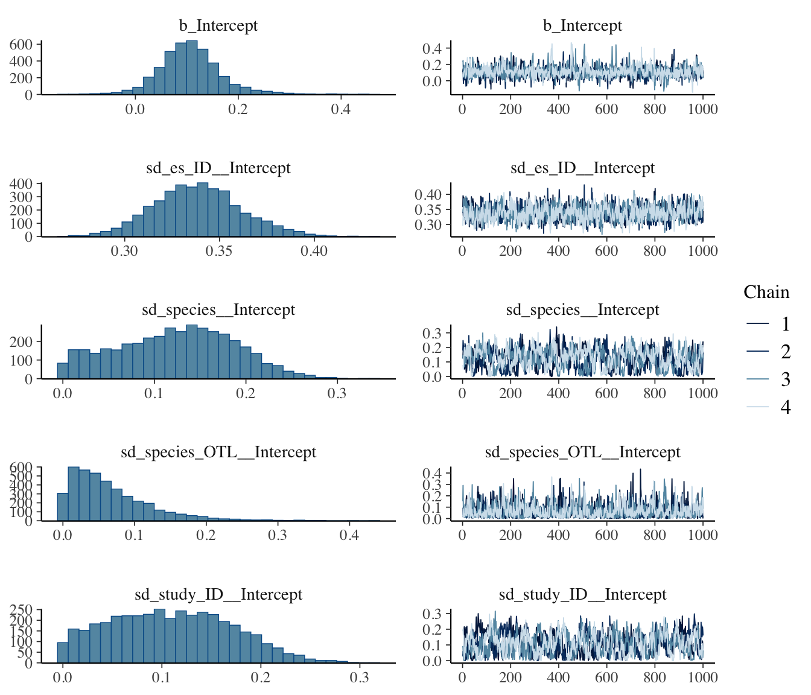
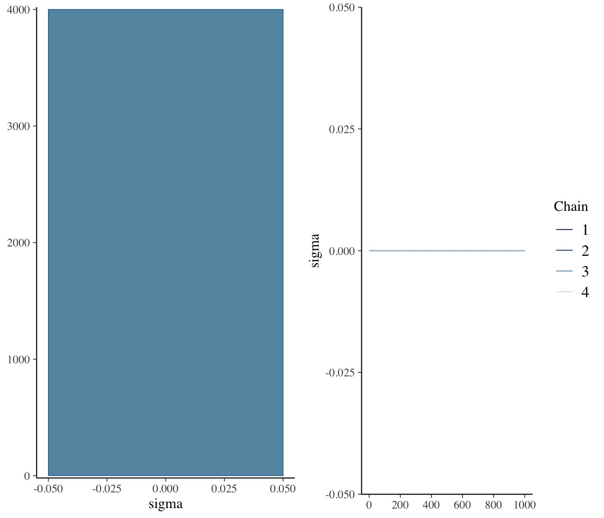

Throughout the previous chapters we have estimated meta-analytic models with metafor using restricted maximum likelihood (REML). The model objects we obtained — overall effects, variance components, confidence intervals — are frequentist estimates.
A Bayesian meta-analysis instead returns a posterior distribution for every parameter in the model, by combining the data (through the likelihood) with prior beliefs about plausible parameter values. This re-framing brings several practical benefits when synthesising data in ecology, evolution and physiology:
Honest uncertainty for variance components. REML-based confidence intervals for variance components (e.g. \(\tau^2\), phylogenetic \(\sigma_{a}^2\)) can be poorly behaved when the number of studies is small or when an estimate is near the boundary of zero (Bürkner, 2017). Posterior credible intervals do not have this problem.
Propagating uncertainty more easily. The Bayesian framing lets you propagate uncertainty into derived quantities (e.g. between-study heterogeneity ratios, prediction intervals) and gives you more flexibility in the derived quantities you present within your paper.
Easy to extend. Once we have the Bayesian machinery in place, adding non-Gaussian likelihoods, missing-data models, or measurement-error structures is mostly a one-line change.
Bayesian methods are well-established in ecological and evolutionary meta-analysis, not just a fashionable alternative, but are not used as often as frequentist methods. Pappalardo et al. (2020) compared traditional REML and Bayesian fits across a range of ecological meta-analytic scenarios and found that the two approaches generally recover the same overall effect, but that the Bayesian fit gives better-calibrated uncertainty when the number of studies is small or when variance components are near zero. Similarly, Nakagawa et al. (2022), in their re-analysis of the simulations of Song et al. (2020), included a Bayesian multilevel model alongside the frequentist alternatives and showed that it can help control the inflated Type I error rates that arise when effect sizes are non-independent (see the simulation figure in their Comment). Together, these papers position Bayesian multilevel models as a robust, often preferable, complement to REML for the kinds of complex, multi-strata data routinely synthesised in our field.
In this tutorial we use the brms R package (Bürkner, 2017). brms provides a lme4-style formula interface to the Stan probabilistic programming language, which means the syntax will look familiar if you have used lmer or metafor::rma.mv. We re-fit the phylogenetic multilevel meta-analysis from the previous chapter so you can directly compare the Bayesian and REML estimates on the same data.
Formal Definition of the Bayesian Phylogenetic Meta-analytic Model
Recall the phylogenetic multilevel meta-analytic model:
These are weakly informative priors. For an effect size on the Fisher’s \(Z_r\) scale, \(\mu \sim N(0, 1)\) says we expect the overall correlation to be near zero with a standard deviation that easily covers the range of biologically plausible effects. For each random-effect standard deviation we use a half-Student-t prior with 3 degrees of freedom and scale 2.5 — written \(t^{+}_{3}(0, 2.5)\). This is the conventional default for variance components in brms and Stan: it concentrates posterior mass on small, biologically plausible SDs while keeping heavier tails than a half-Normal, so the prior does not pull large variance components down toward zero when the data really do support them. We will discuss how to override these defaults below.
brms will assign reasonable defaults for any parameter you do not name explicitly. To see what brmswould use, ask for the prior skeleton implied by the model formula:
We override the defaults with weakly-informative priors that match the formal definition above:
Code
priors <-c( brms::prior(normal(0, 1), class ="Intercept"), brms::prior(student_t(3, 0, 2.5), class ="sd"))
class = "sd" applies the same prior to every group-level standard deviation. To put a different prior on, say, the phylogenetic SD only, use class = "sd", group = "species_OTL".
The first render will compile and sample the model (a few minutes). Subsequent renders read the cached fit from models/bayes_phylo.rds and complete in seconds. Delete the .rds to force a refit (e.g. after editing the formula or priors).
A few things to note:
First, the | se(sqrt(V_Zr)) syntax tells brms to use the sampling variances to control for uncertainty in the effect sizes. The se stands for standard error, which is why we need to take the square root of the sampling variance. Now, there are a couple of ways we can use the se() function. Currently, we are not setting the sigma argument within the function to TRUE, i.e., se(sqrt(V_Zr), sigma = FALSE), which means that the model will not estimate a separate residual SD for the model. If we set sigma = TRUE we will allow the model to estimate a separate residual SD for the model. Instead, we are fitting an observation-level random effect (to keep consistent with metafor) which is a common way to model residual error in meta-analysis. If we had set sigma = TRUE as well the model would have estimated a separate residual SD for the model, but we would need to drop the observation-level random effect as these would be redundant. We can try that formulation below to show it’s roughly the same:
We’ll explore below the similarities between these models.
Second, the gr() function around the phylogenetic random effect is a special syntax that tells brms to use the supplied covariance matrix A for that grouping factor. The data2 argument is where we pass the phylogenetic covariance matrix. Also note that the phylogenetic A matrix differs from metafor because it’s a covariance matrix whereas metafor expects a correlation matrix. In our specific case the distinction is purely terminological: because we built the tree with ape::compute.brlen(..., method = "Grafen", power = 1) it is ultrametric with root-to-tip distance equal to 1, so every diagonal of vcv(tree, cor = FALSE) equals 1 and the covariance matrix is numerically identical to the correlation matrix. The distinction only matters if you use a non-ultrametric tree or skip the Grafen normalisation.
Finally, the control argument is where we can tweak the MCMC sampling parameters. adapt_delta controls the target acceptance rate for the Hamiltonian Monte Carlo sampler; increasing it can help with convergence when the model is complex.
Check MCMC diagnostics
Before interpreting any posterior summary, it is important to confirm that the chains have converged. We can usually get a good sense of this from the printed summary of the model fit already but it’s also good to visually inspect the trace plots and posterior densities.
Code
summary(bayes_phylo)
Family: gaussian
Links: mu = identity
Formula: Zr | se(sqrt(V_Zr)) ~ 1 + (1 | study_ID) + (1 | es_ID) + (1 | species) + (1 | gr(species_OTL, cov = A))
Data: zr_data (Number of observations: 272)
Draws: 4 chains, each with iter = 2000; warmup = 1000; thin = 1;
total post-warmup draws = 4000
Multilevel Hyperparameters:
~es_ID (Number of levels: 272)
Estimate Est.Error l-95% CI u-95% CI Rhat Bulk_ESS Tail_ESS
sd(Intercept) 0.34 0.02 0.30 0.39 1.00 979 1716
~species (Number of levels: 79)
Estimate Est.Error l-95% CI u-95% CI Rhat Bulk_ESS Tail_ESS
sd(Intercept) 0.12 0.06 0.01 0.24 1.01 318 649
~species_OTL (Number of levels: 74)
Estimate Est.Error l-95% CI u-95% CI Rhat Bulk_ESS Tail_ESS
sd(Intercept) 0.07 0.06 0.00 0.21 1.00 1053 1636
~study_ID (Number of levels: 88)
Estimate Est.Error l-95% CI u-95% CI Rhat Bulk_ESS Tail_ESS
sd(Intercept) 0.11 0.06 0.01 0.23 1.01 301 892
Regression Coefficients:
Estimate Est.Error l-95% CI u-95% CI Rhat Bulk_ESS Tail_ESS
Intercept 0.11 0.06 -0.01 0.25 1.00 1506 1621
Further Distributional Parameters:
Estimate Est.Error l-95% CI u-95% CI Rhat Bulk_ESS Tail_ESS
sigma 0.00 0.00 0.00 0.00 NA NA NA
Draws were sampled using sampling(NUTS). For each parameter, Bulk_ESS
and Tail_ESS are effective sample size measures, and Rhat is the potential
scale reduction factor on split chains (at convergence, Rhat = 1).
Two things to look for in the printout:
R-hat (\(\hat{R}\)) for every parameter should be \(< 1.01\). Larger values mean the chains have not mixed.
Bulk_ESS and Tail_ESS should each be ~1000, but sometimes it will be lower, but getting above at least 500 is desirable. Low ESS means the posterior summary is based on too few effective draws. Increasing iter, warmup, and thin more can help, but sometimes if the random effects are truly very low then ESS will remain low.
A visual check of the trace plots and posterior densities is also really important to check to ensure proper mixing of the MCMC chains. They usually tell the same story as the printed diagnostics but can sometimes reveal issues that are not obvious from the numbers alone (e.g. multimodality, poor mixing, or a small number of effective samples).
Code
plot(bayes_phylo, ask =FALSE)


Note that there appears to be some issues with mixing for some parameters (low EES and chains are dragging), so we should play around with MCMC parameters to try to improve this, but this isn’t bad for demonstration purposes.
Recall that we also fit the same model with sigma = TRUE. We can look how the output for that model compares to the one we have just fit:
Code
summary(bayes_phylo2)
Family: gaussian
Links: mu = identity
Formula: Zr | se(sqrt(V_Zr), sigma = TRUE) ~ 1 + (1 | study_ID) + (1 | species) + (1 | gr(species_OTL, cov = A))
Data: zr_data (Number of observations: 272)
Draws: 4 chains, each with iter = 3000; warmup = 1000; thin = 1;
total post-warmup draws = 8000
Multilevel Hyperparameters:
~species (Number of levels: 79)
Estimate Est.Error l-95% CI u-95% CI Rhat Bulk_ESS Tail_ESS
sd(Intercept) 0.12 0.06 0.01 0.24 1.00 912 1698
~species_OTL (Number of levels: 74)
Estimate Est.Error l-95% CI u-95% CI Rhat Bulk_ESS Tail_ESS
sd(Intercept) 0.07 0.06 0.00 0.21 1.00 2944 4164
~study_ID (Number of levels: 88)
Estimate Est.Error l-95% CI u-95% CI Rhat Bulk_ESS Tail_ESS
sd(Intercept) 0.11 0.06 0.01 0.23 1.00 1163 3037
Regression Coefficients:
Estimate Est.Error l-95% CI u-95% CI Rhat Bulk_ESS Tail_ESS
Intercept 0.11 0.06 -0.01 0.24 1.00 4457 3475
Further Distributional Parameters:
Estimate Est.Error l-95% CI u-95% CI Rhat Bulk_ESS Tail_ESS
sigma 0.34 0.02 0.29 0.39 1.00 5922 5079
Draws were sampled using sampling(NUTS). For each parameter, Bulk_ESS
and Tail_ESS are effective sample size measures, and Rhat is the potential
scale reduction factor on split chains (at convergence, Rhat = 1).
Here, we can see that sigma is estimated and it should match the sd_es_ID__Intercept from the first model, which is the observation-level random effect. The two models are essentially the same, but the first one is more consistent with the way we have been modelling residual error in metafor and is more parsimonious (fewer parameters to estimate).
Posterior summaries
The overall effect (intercept on the \(Z_r\) scale) and 95% credible interval:
Is there an overall positive or negative relationship between physiology and movement?
The posterior mean for the intercept is 0.108 with a 95% credible interval of -0.007 to 0.251. As in the REML analysis, the overall relationship is positive and the credible interval excludes zero. Compare these numbers with the REML estimates from the previous chapter — they should agree closely, which is reassuring: the Bayesian and frequentist machinery are returning the same biological answer, but the Bayesian fit also gives us full posterior distributions for every variance component (try brms::mcmc_plot(bayes_phylo, variable = "^sd_", regex = TRUE)).
Extracting Posterior distributions and Derived Quantities
One of the key benefits of the Bayesian framework is that we can propagate uncertainty into any derived quantity simply by computing it draw-by-draw across the posterior. As an example, we will compute a full posterior distribution for \(I^2_{total}\) — the proportion of total variance attributable to genuine heterogeneity (rather than sampling noise) — using the same definition as in the Heterogeneity chapter:
The denominator includes the typical sampling variance\(\sigma^2_m\), which is a fixed function of the inverse-variance weights \(w_i = 1/v_i\) and is computed once from the data (not estimated by the model):
Omitting \(\sigma^2_m\) would inflate \(I^2_{total}\) because the denominator would no longer represent total variance. With \(\sigma^2_m\) in hand, we compute the posterior of \(I^2_{total}\) by squaring each posterior draw of the random-effect standard deviations, summing them, and dividing by the total:
Code
# Typical sampling variance w <-1/ zr_data$V_Zrk <-nrow(zr_data)sigma2_m <- (k -1) *sum(w) / (sum(w)^2-sum(w^2))# Posterior draws of every random-effect SD; square to get variances!draws <- brms::as_draws_df(bayes_phylo)sigma2_study <- draws$sd_study_ID__Intercept^2sigma2_es <- draws$sd_es_ID__Intercept^2sigma2_spp <- draws$sd_species__Intercept^2sigma2_phylo <- draws$sd_species_OTL__Intercept^2var_total <- sigma2_study + sigma2_es + sigma2_spp + sigma2_phyloI2_total <- var_total / (var_total + sigma2_m)# Posterior summary (median + 95% credible interval)quantile(I2_total, c(0.025, 0.5, 0.975))
2.5% 50% 97.5%
0.862 0.889 0.916
Because we computed \(I^2_{total}\) per draw, we have the posterior distribution of \(I^2_{total}\) rather than a single point estimate. The 95% interval reported above is a credible interval that fully reflects uncertainty in every variance component simultaneously — something that is awkward to obtain from the REML fit without bootstrapping.
# Bayesian Meta-analysis```{r}#| label: setup-bayes#| echo: false#| message: false#| warning: falsepacman::p_load(metafor, brms, ape, rotl, phytools, tidyverse, orchaRd, flextable, pander, mathjaxr, bayesplot)options(digits=3)```## **Introduction to Bayesian Meta-analysis**Throughout the previous chapters we have estimated meta-analytic models with [`metafor`](fixed-vs-random.qmd) using restricted maximum likelihood (REML). The model objects we obtained — overall effects, variance components, confidence intervals — are *frequentist* estimates.A **Bayesian** meta-analysis instead returns a *posterior distribution* for every parameter in the model, by combining the data (through the likelihood) with prior beliefs about plausible parameter values. This re-framing brings several practical benefits when synthesising data in ecology, evolution and physiology:- **Honest uncertainty for variance components.** REML-based confidence intervals for variance components (e.g. $\tau^2$, phylogenetic $\sigma_{a}^2$) can be poorly behaved when the number of studies is small or when an estimate is near the boundary of zero [@Burkner2017]. Posterior credible intervals do not have this problem.- **Propagating uncertainty more easily.** The Bayesian framing lets you propagate uncertainty into derived quantities (e.g. between-study heterogeneity ratios, prediction intervals) and gives you more flexibility in the derived quantities you present within your paper.- **Easy to extend.** Once we have the Bayesian machinery in place, adding non-Gaussian likelihoods, missing-data models, or measurement-error structures is mostly a one-line change.Bayesian methods are well-established in ecological and evolutionary meta-analysis, not just a fashionable alternative, but are not used as often as frequentist methods. @Pappalardo2020 compared traditional REML and Bayesian fits across a range of ecological meta-analytic scenarios and found that the two approaches generally recover the same overall effect, but that the Bayesian fit gives better-calibrated uncertainty when the number of studies is small or when variance components are near zero. Similarly, @Nakagawa2022comment, in their re-analysis of the simulations of @Song2020, included a Bayesian multilevel model alongside the frequentist alternatives and showed that it can help control the inflated Type I error rates that arise when effect sizes are non-independent (see the simulation figure in their Comment). Together, these papers position Bayesian multilevel models as a robust, often preferable, complement to REML for the kinds of complex, multi-strata data routinely synthesised in our field.In this tutorial we use the [`brms`](https://paulbuerkner.com/brms/) R package [@Burkner2017]. `brms` provides a `lme4`-style formula interface to the [Stan](https://mc-stan.org/) probabilistic programming language, which means the syntax will look familiar if you have used `lmer` or `metafor::rma.mv`. We re-fit the **phylogenetic multilevel meta-analysis** from the [previous chapter](phylo.qmd) so you can directly compare the Bayesian and REML estimates on the same data.## **Formal Definition of the Bayesian Phylogenetic Meta-analytic Model**[Recall](phylo.qmd) the phylogenetic multilevel meta-analytic model:$$\begin{aligned}y_{i} &= \mu + s_{j[i]} + spp_{k[i]} + a_{k[i]} + e_{i} + m_{i} \\m_{i} &\sim N(0, v_{i}\textbf{I}) \\s_{j} &\sim N(0, \tau^2\textbf{I}) \\spp_{k} &\sim N(0, \sigma_{k}^2\textbf{I}) \\a_{k} &\sim N(0, \sigma_{a}^2\textbf{A}) \\e_{i} &\sim N(0, \sigma_{e}^2\textbf{I})\end{aligned}$$The model is structurally identical to the one we fit with `metafor::rma.mv`. To make it Bayesian we add **priors** on every estimated parameter:$$\begin{aligned}\mu &\sim N(0, 1) \\\tau, \sigma_{k}, \sigma_{a}, \sigma_{e} &\sim t^{+}_{3}(0, 2.5)\end{aligned}$$These are *weakly informative* priors. For an effect size on the Fisher's $Z_r$ scale, $\mu \sim N(0, 1)$ says we expect the overall correlation to be near zero with a standard deviation that easily covers the range of biologically plausible effects. For each random-effect standard deviation we use a half-Student-t prior with 3 degrees of freedom and scale 2.5 — written $t^{+}_{3}(0, 2.5)$. This is the conventional default for variance components in `brms` and Stan: it concentrates posterior mass on small, biologically plausible SDs while keeping heavier tails than a half-Normal, so the prior does not pull large variance components down toward zero when the data really do support them. We will discuss how to override these defaults below.## **Example: Bayesian Phylogenetic Meta-analysis**### Format raw data for analysisWe re-use the dispersal data set (Z-transformed correlation coefficients, $Z_r$) from [@WuSeebacher2022](https://www.nature.com/articles/s42003-022-03055-y) introduced in the [Effect Size tutorial](effect-size.qmd) and analysed with REML in the [Phylogenetic Meta-analysis tutorial](phylo.qmd).```{r raw-data-bayes}zr_data <-read.csv("https://raw.githubusercontent.com/daniel1noble/meta-workshop/gh-pages/data/ind_disp_raw_data.csv") %>% dplyr::select(-dispersal_def) %>% tibble::rowid_to_column("es_ID") %>% dplyr::mutate(species_OTL = stringr::str_replace_all(species_OTL, "_", " "))zr_data <- metafor::escalc(measure ="ZCOR", ri = corr_coeff, ni = sample_size,data = zr_data, var.names =c("Zr", "V_Zr"))```### Build the tree and the phylogenetic correlation matrixThis step is identical to the [Phylogenetic Meta-analysis chapter](phylo.qmd); we reproduce it here so the chapter is self-contained.```{r}#| label: tree-bayes#| message: false#| warning: falsespecies <-sort(unique(as.character(zr_data$species_OTL)))taxa <- rotl::tnrs_match_names(names = species)tree <- rotl::tol_induced_subtree(ott_ids =ott_id(taxa), label_format ="name")set.seed(1)tree <- ape::compute.brlen(tree, method ="Grafen", power =1)tree <- ape::multi2di(tree, random =TRUE)phylo_cov <-vcv(tree, cor =FALSE)zr_data <- zr_data %>% dplyr::mutate(species_OTL = stringr::str_replace_all(species_OTL, " ", "_"))```### Specify priors`brms` will assign reasonable defaults for any parameter you do not name explicitly. To see what `brms` *would* use, ask for the prior skeleton implied by the model formula:```{r priors-default, eval=FALSE}brms::get_prior( Zr |se(sqrt(V_Zr)) ~1+ (1| study_ID) + (1| es_ID) + (1| species) + (1|gr(species_OTL, cov = A)),data = zr_data,data2 =list(A = phylo_cov))```We override the defaults with weakly-informative priors that match the formal definition above:```{r priors}priors <-c( brms::prior(normal(0, 1), class ="Intercept"), brms::prior(student_t(3, 0, 2.5), class ="sd"))````class = "sd"` applies the same prior to every group-level standard deviation. To put a different prior on, say, the phylogenetic SD only, use `class = "sd", group = "species_OTL"`.### Fit the model in `brms````{r fit-bayes}#| label: bayes-fit#| message: false#| warning: false#| results: hidebayes_phylo <- brms::brm( Zr |se(sqrt(V_Zr)) ~1+ (1| study_ID) + (1| es_ID) + (1| species) + (1|gr(species_OTL, cov = A)),data = zr_data,data2 =list(A = phylo_cov),prior = priors,chains =4, iter =3000, warmup =1000, thin =1, cores =4, seed =42,control =list(adapt_delta =0.95),file ="models/bayes_phylo")```::: {.callout-note}The first render will compile and sample the model (a few minutes). Subsequent renders read the cached fit from `models/bayes_phylo.rds` and complete in seconds. Delete the `.rds` to force a refit (e.g. after editing the formula or priors).:::A few things to note: First, the `| se(sqrt(V_Zr))` syntax tells `brms` to use the sampling variances to control for uncertainty in the effect sizes. The `se` stands for standard error, which is why we need to take the square root of the sampling variance. Now, there are a couple of ways we can use the `se()` function. Currently, we are not setting the `sigma` argument within the function to `TRUE`, i.e., `se(sqrt(V_Zr), sigma = FALSE)`, which means that the model will not estimate a separate residual SD for the model. If we set `sigma = TRUE` we will allow the model to estimate a separate residual SD for the model. Instead, we are fitting an observation-level random effect (to keep consistent with `metafor`) which is a common way to model residual error in meta-analysis. If we had set `sigma = TRUE` as well the model would have estimated a separate residual SD for the model, but we would need to drop the observation-level random effect as these would be redundant. We can try that formulation below to show it's roughly the same:```{r fit-bayes2}#| label: bayes-fit2#| message: false#| warning: false#| results: hidebayes_phylo2 <- brms::brm( Zr |se(sqrt(V_Zr), sigma =TRUE) ~1+ (1| study_ID) + (1| species) + (1|gr(species_OTL, cov = A)),data = zr_data,data2 =list(A = phylo_cov),prior = priors,chains =4, iter =3000, warmup =1000, thin =1, cores =4, seed =42,control =list(adapt_delta =0.95),file ="models/bayes_phylo2")```We'll explore below the similarities between these models.Second, the `gr()` function around the phylogenetic random effect is a special syntax that tells `brms` to use the supplied covariance matrix `A` for that grouping factor. The `data2` argument is where we pass the phylogenetic covariance matrix. Also note that the phylogenetic A matrix differs from metafor because it's a covariance matrix whereas `metafor` expects a correlation matrix. In our specific case the distinction is purely terminological: because we built the tree with `ape::compute.brlen(..., method = "Grafen", power = 1)` it is ultrametric with root-to-tip distance equal to 1, so every diagonal of `vcv(tree, cor = FALSE)` equals 1 and the covariance matrix is numerically identical to the correlation matrix. The distinction only matters if you use a non-ultrametric tree or skip the Grafen normalisation.Finally, the `control` argument is where we can tweak the MCMC sampling parameters. `adapt_delta` controls the target acceptance rate for the Hamiltonian Monte Carlo sampler; increasing it can help with convergence when the model is complex.### Check MCMC diagnosticsBefore interpreting any posterior summary, it is important to confirm that the chains have converged. We can usually get a good sense of this from the printed summary of the model fit already but it's also good to visually inspect the trace plots and posterior densities.```{r diagnostics}summary(bayes_phylo)```Two things to look for in the printout:- **R-hat ($\hat{R}$)** for every parameter should be $< 1.01$. Larger values mean the chains have not mixed.- **Bulk_ESS** and **Tail_ESS** should each be ~1000, but sometimes it will be lower, but getting above at least 500 is desirable. Low ESS means the posterior summary is based on too few effective draws. Increasing `iter`, `warmup`, and `thin` more can help, but sometimes if the random effects are truly very low then ESS will remain low.A visual check of the trace plots and posterior densities is also really important to check to ensure proper mixing of the MCMC chains. They usually tell the same story as the printed diagnostics but can sometimes reveal issues that are not obvious from the numbers alone (e.g. multimodality, poor mixing, or a small number of effective samples).```{r diagnostics-plots}#| fig-height: 6plot(bayes_phylo, ask =FALSE)```Note that there appears to be some issues with mixing for some parameters (low EES and chains are dragging), so we should play around with MCMC parameters to try to improve this, but this isn't bad for demonstration purposes.Recall that we also fit the same model with `sigma = TRUE`. We can look how the output for that model compares to the one we have just fit:```{r diagnostics2}summary(bayes_phylo2)```Here, we can see that `sigma` is estimated and it should match the `sd_es_ID__Intercept` from the first model, which is the observation-level random effect. The two models are essentially the same, but the first one is more consistent with the way we have been modelling residual error in `metafor` and is more parsimonious (fewer parameters to estimate).### Posterior summariesThe overall effect (intercept on the $Z_r$ scale) and 95% credible interval:```{r posterior-summary}brms::posterior_summary(bayes_phylo, variable ="b_Intercept")```Variance components — between-study, within-study (effect-size-level), non-phylogenetic species, and phylogenetic species:```{r variance-components}brms::posterior_summary(bayes_phylo, variable =c("sd_study_ID__Intercept","sd_es_ID__Intercept","sd_species__Intercept","sd_species_OTL__Intercept"))```#### What does the model output tell us?::: {.panel-tabset}## Task> **Is there an overall positive or negative relationship between physiology and movement?**## Answer> The posterior mean for the intercept is `r round(brms::posterior_summary(bayes_phylo, variable = "b_Intercept")[, "Estimate"], 3)` with a 95% credible interval of `r round(brms::posterior_summary(bayes_phylo, variable = "b_Intercept")[, "Q2.5"], 3)` to `r round(brms::posterior_summary(bayes_phylo, variable = "b_Intercept")[, "Q97.5"], 3)`. As in the [REML analysis](phylo.qmd), the overall relationship is **positive** and the credible interval excludes zero. Compare these numbers with the REML estimates from the previous chapter — they should agree closely, which is reassuring: the Bayesian and frequentist machinery are returning the same biological answer, but the Bayesian fit also gives us full posterior distributions for every variance component (try `brms::mcmc_plot(bayes_phylo, variable = "^sd_", regex = TRUE)`).:::## **Extracting Posterior distributions and Derived Quantities**One of the key benefits of the Bayesian framework is that we can propagate uncertainty into any derived quantity simply by computing it draw-by-draw across the posterior. As an example, we will compute a full posterior distribution for $I^2_{total}$ — the proportion of total variance attributable to genuine heterogeneity (rather than sampling noise) — using the same definition as in the [Heterogeneity chapter](het.qmd):$$I^2_{total} = \frac{\tau^2 + \sigma_{k}^2 + \sigma_{a}^2 + \sigma_{e}^2}{\tau^2 + \sigma_{k}^2 + \sigma_{a}^2 + \sigma_{e}^2 + \sigma_{m}^2}$$The denominator includes the **typical sampling variance** $\sigma^2_m$, which is a fixed function of the inverse-variance weights $w_i = 1/v_i$ and is computed once from the data (not estimated by the model):$$\sigma_{m}^2 = \frac{(k-1)\sum w_i}{(\sum w_i)^2 - \sum w_i^2}$$Omitting $\sigma^2_m$ would inflate $I^2_{total}$ because the denominator would no longer represent total variance. With $\sigma^2_m$ in hand, we compute the posterior of $I^2_{total}$ by squaring each posterior draw of the random-effect standard deviations, summing them, and dividing by the total:```{r derived-quantities}# Typical sampling variance w <-1/ zr_data$V_Zrk <-nrow(zr_data)sigma2_m <- (k -1) *sum(w) / (sum(w)^2-sum(w^2))# Posterior draws of every random-effect SD; square to get variances!draws <- brms::as_draws_df(bayes_phylo)sigma2_study <- draws$sd_study_ID__Intercept^2sigma2_es <- draws$sd_es_ID__Intercept^2sigma2_spp <- draws$sd_species__Intercept^2sigma2_phylo <- draws$sd_species_OTL__Intercept^2var_total <- sigma2_study + sigma2_es + sigma2_spp + sigma2_phyloI2_total <- var_total / (var_total + sigma2_m)# Posterior summary (median + 95% credible interval)quantile(I2_total, c(0.025, 0.5, 0.975))```Because we computed $I^2_{total}$ per draw, we have the *posterior distribution* of $I^2_{total}$ rather than a single point estimate. The 95% interval reported above is a credible interval that fully reflects uncertainty in every variance component simultaneously — something that is awkward to obtain from the REML fit without bootstrapping.<br>## **References**<div id="refs"></div><br>## **Session Information**```{r}#| label: sessioninfo-bayes#| echo: falsepander(sessionInfo(), locale =FALSE)```